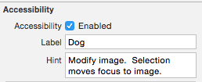

Accessibility Traits
Accessibility Traits are yet another useful and important feature in the realm of iOS Accessibility. An accessibility Trait allows you to choose the best description for what an element in your application does.
A trait is like an extra accessibility Label, that lets a user know how your button, link, text field, etc. will react upon interaction. It is important to set up these traits properly so that a user does not get confused when clicking on a "Text Field" opens the web browser.
Implementing Accessibility Traits Using The Storyboard Editor
Accessibility Traits don't often change while the app is running, so for most people, this method will suffice.
- Go to your storyboard editor in XCode
- Click on the element you would like to add a Trait for
- Open the Identity Inspector in the right bar
- Enable Accessibility by checking the box that says "Enabled"
- Scroll down to Accessibility and check the box for the trait(s) that you would like to apply
Below is what this looks like for the Dog button in the Traits Section of the Deque U app.


You will want to add only the trait that best describes the behavior of your element. For instance, as in the Traits Demo of our Deque U app, if your element opens a web page, you should label it as a link, even if it is a UIButton. Doubling up on traits is confusing and unnecessary in most situations.
Implementing Accessibility Labels and Hints Programatically
Sometimes setting the accessibility label/hint in the Storyboard Editor doesn't quite cut it. For instance, the properties of the element might change when the app is running or when the user performs an action. In this case, you will want to set the accessibility descriptions programatically. This can be done easily with just a few lines of code.
- In the Storyboard Editor, turn on accessibility for the item that you want to set a label or hint for, just like in the first part of this demo
- Pull up the header file for your View Controller in the Assistant Editor
- Ctrl click and drag from your element to the header file to create an IBOutlet for your element
- Now open your implementation file for your ViewController
- Use the
accessibilityLabel/accessibilityHint member OR the setAccessibilityLabel/setAccessibilityHint function to add the appropriate string values.
Below are the two ways to set an accessibility Label.
_DogDisplay.accessibilityLabel = @"Displays a Dog";
[_DogDisplay setAccessibilityLabel:@"Displays a Dog"];
We hope you found this tutorial useful! Make sure to check out our app, Deque U for iOS on the App Store, and take a peek at the rest of our blog posts.
Tips
- Make sure your labels are concise! if the label is more than one or two words, the additional information should probably go in a hint.
- If the content on the page is dynamic, make sure that your labels change when elements on the page are altered